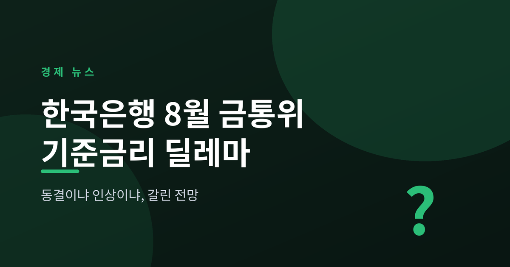
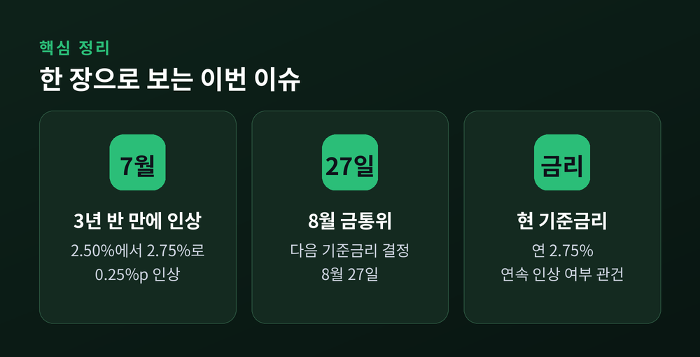
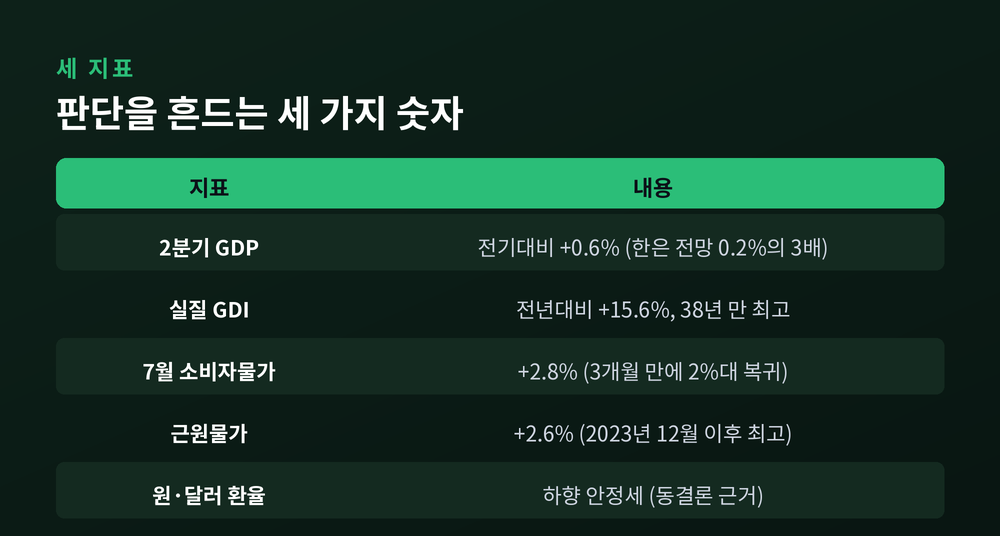
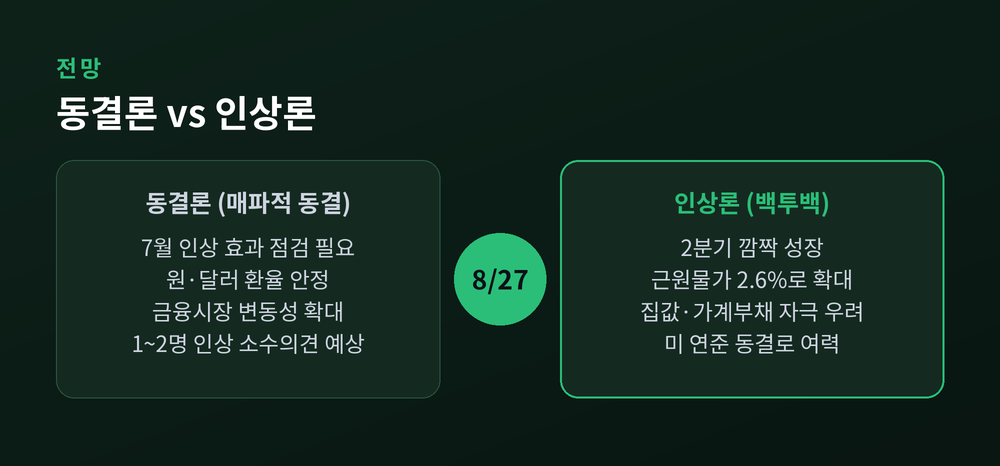
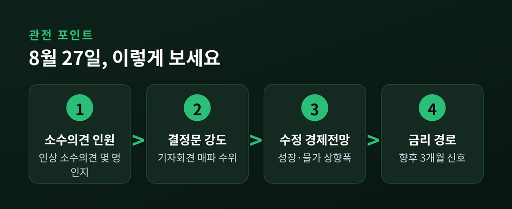

이번 글에서는 8월 27일로 예정된 한국은행 금융통화위원회의 기준금리 결정을 정리해 보겠습니다. 7월에 3년 6개월 만에 금리를 올린 한은이, 한 달 만에 또 올릴지를 두고 시장의 전망이 팽팽하게 갈리고 있습니다. 먼저 결론부터 말씀드리면, 지금 무게가 조금 더 실린 쪽은 '동결'이지만 '연속 인상'을 점치는 목소리도 만만치 않습니다.
이 글은 정보 전달을 위한 뉴스 해설이며, 특정 금융상품이나 자산에 대한 투자 권유가 아닙니다. 투자 판단과 그 결과에 대한 책임은 투자자 본인에게 있습니다.
한국은행 금융통화위원회는 지난 7월 16일 기준금리를 연 2.50%에서 2.75%로 올렸습니다.
0.25%포인트, 폭으로 보면 크지 않습니다. 그러나 방향이 중요합니다. 한은은 전년 7월부터 1년 가까이 2.50%를 유지해 왔습니다. 약 3년 6개월 만에 처음으로 인상 쪽으로 핸들을 돌린 셈입니다.
이유는 하나가 아니었습니다. 예상보다 단단한 경기, 수도권 집값과 가계부채의 오름세, 그리고 수요가 밀어 올리는 물가 압력이 함께 작용했습니다. 7월 통화정책방향 결정문에도 "수도권 주택가격 상승세와 가계부채 증가세 확대에 계속 유의해야 하는 상황"이라는 문장이 담겼습니다.
인상에는 그늘도 따랐습니다. 한 금통위원은 변동금리 주택담보대출 비중이 높은 상황에서 금리를 올리면 가계의 이자 부담이 커진다고 짚었습니다. 특히 차주 평균보다 취약차주와 한계기업이 받는 충격에 더 유의해야 한다고 덧붙였습니다. 금리를 올려 집값과 빚을 누르려는 손과, 그 과정에서 약한 고리가 다칠 수 있다는 우려가 한 회의 안에 함께 있었던 셈입니다.

다음 금통위는 8월 27일입니다.
관심은 단 하나에 쏠려 있습니다. 7월에 이어 8월에도 연속으로 올릴 것인가. 시장에서는 이를 '백투백(back-to-back) 인상'이라고 부릅니다.
문제는 지표들이 서로 다른 이야기를 한다는 데 있습니다. 환율과 헤드라인 물가는 안정을 찾았습니다. 반면 성장세는 예상을 훌쩍 넘었고, 물가의 밑바닥을 보여주는 근원물가는 오히려 고개를 들었습니다. 잡힌 듯 보이지만 불씨는 남아 있는 상황. 한은의 고민이 깊어질 수밖에 없습니다.
첫째, 성장입니다. 2026년 2분기 실질 국내총생산(GDP)은 전 분기보다 0.6% 늘었습니다. 한은이 앞서 내놓은 전망치 0.2%의 세 배에 가깝습니다. 전년 동기와 견주면 3.7% 성장입니다. 반도체 호황과 수출, 여기에 내수 개선이 더해진 결과입니다. 실질 국내총소득(GDI)은 전년 동기 대비 15.6% 뛰어 1988년 1분기 이후 38년 만의 최고치를 기록했습니다. "연간 3%대 성장도 가시권"이라는 말이 나올 정도였습니다. 경기가 이만큼 뜨겁다면 금리를 한 번 더 올려도 무리가 없다는 인상론의 가장 큰 버팀목이 바로 이 성장 지표입니다.
둘째, 물가입니다. 7월 소비자물가는 1년 전보다 2.8% 올랐습니다. 석 달 만에 다시 2%대로 내려왔습니다. 석유류와 농축수산물의 오름세가 둔해진 덕입니다. 언뜻 안심할 만한 숫자입니다.
그런데 속을 열어 보면 다릅니다. 식료품과 에너지를 뺀 근원물가는 2.6% 올라, 2023년 12월 이후 가장 높은 상승률을 보였습니다. 전월 2.5%보다 커진 것입니다. 겉으로 드러난 물가는 내렸지만, 기저의 수요 압력은 오히려 짙어졌다는 뜻입니다.
헤드라인 숫자에는 정책의 손길도 얹혀 있었습니다. 정부는 석유 최고가격제가 7월 물가 상승률을 0.3%포인트 낮춘 것으로 추정했습니다. 이 제도가 없었다면 상승률이 3.1%에 달했을 것이라는 계산입니다. 표면의 2.8%만 보고 안심하기 어려운 이유입니다.
셋째, 환율입니다. 원·달러 환율은 하향 안정세를 보였습니다. 여기에 미국 연방준비제도가 '매파적 동결'로 금리 인하를 미루면서 한미 금리차 부담도 다소 누그러졌습니다. 급하게 따라 올릴 이유가 줄었다는 해석과, 이제 국내 사정에 맞춰 올릴 여력이 생겼다는 해석이 동시에 나옵니다.

전문가들의 견해는 크게 둘로 나뉩니다.
한쪽은 '매파적 동결'입니다. 우리금융경영연구소는 8월 금통위가 기준금리를 현 2.75%로 묶어 둘 것으로 봤습니다. 근거는 세 가지입니다. 7월 인상의 효과를 지켜볼 시간이 필요하다는 것, 원·달러 환율이 안정됐다는 것, 국내외 금융시장의 변동성이 커졌다는 것입니다. 다만 이들도 금통위원 1~2명이 '인상' 소수의견을 낼 수 있고, 결정문과 총재 기자회견에서 추가 인상 가능성을 강하게 내비칠 것으로 예상했습니다. 동결하되 말은 매섭게, 라는 그림입니다.
다른 쪽은 '연속 인상'입니다. 신영증권의 조용구 애널리스트는 8월에 25bp 추가 인상을 전망했습니다. 한국씨티은행의 김진욱 이코노미스트도 강한 2분기 성장과 수요 측 물가 압력을 근거로 연속 인상 쪽에 무게를 실었습니다. "미국은 멈추는데 한국은 더 올린다"는 백투백 인상론이 힘을 받은 배경입니다.
그 사이에는 시점을 두고 갈리는 견해도 있습니다. 8월에 곧장 올리자는 쪽과, 8월은 쉬고 10월에 속도를 조절하며 올리자는 쪽이 나뉩니다. 결국 다투는 것은 '올릴지'보다 '언제, 어떤 말과 함께 올릴지'에 가깝습니다. 그만큼 이번 회의의 결정문 한 줄, 총재의 말 한마디가 갖는 무게가 큽니다.

예전에는 금리 방향만 맞히면 되는 게임이었습니다. 지금은 다릅니다. 같은 지표를 놓고도 해석이 갈리니, 결정문의 표현 하나까지 시장이 뜯어봅니다.
몇 가지를 함께 지켜보시길 권합니다. 인상 소수의견이 몇 명이나 나오는지. 결정문과 기자회견의 매파 강도가 어느 정도인지. 한은이 8월 수정 경제전망에서 성장률과 물가 전망을 얼마나 끌어올리는지. 그리고 향후 3개월 금리 경로를 두고 금통위원들이 어떤 신호를 주는지.
체감의 결도 갈립니다. 금리를 올리면 변동금리 대출을 쓰는 가계의 이자 부담이 늘고, 예금 이자는 더해집니다. 반대로 묶으면 당장의 부담은 미뤄지지만, 집값과 빚을 자극하는 불씨는 남습니다. 어느 쪽이든 득과 실이 함께 오는 선택입니다.
솔직히 이 조합은 예측이 쉽지 않습니다. 성장은 뜨겁고 물가는 어정쩡하며 환율은 차분합니다. 서로 다른 방향을 가리키는 바늘을 하나로 모으는 일이 이번 금통위의 숙제입니다.

정리하면 이렇습니다.
8월 27일 한은의 선택은 숫자 하나가 아니라 신호의 문제입니다. 올리든 묶든, 시장은 다음 수를 읽으려 할 것입니다.
— "동결이라 해도 조용한 동결은 아닐 것이다." 지금 시장이 가장 크게 공감하는 한 문장입니다.
금리의 방향이 궁금하신 분이라면, 결정 그 자체보다 한은이 남길 말의 온도를 먼저 살펴보시면 좋겠습니다.